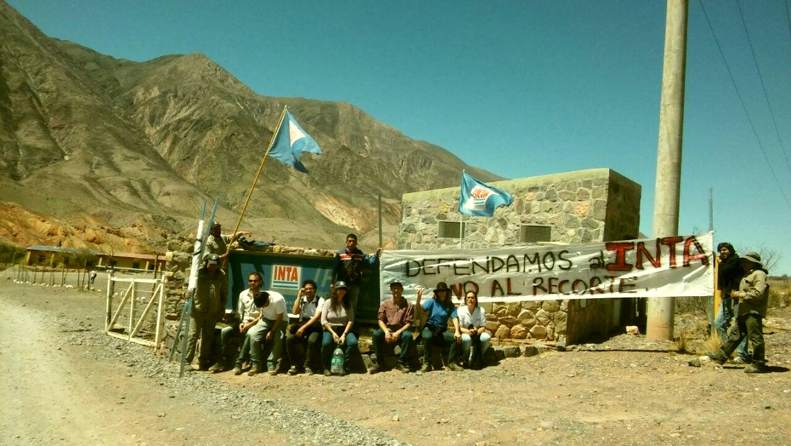

El Instituto Nacional de Tecnología Agropecuaria (INTA), pilar histórico de nuestro desarrollo científico agrícola y del acompañamiento a la familia agraria, enfrenta hoy el ataque más virulento de su historia en democracia. No estamos ante una simple crisis administrativa ni ante un intento de optimizar los recursos del Estado, sino frente a un plan de exterminio premeditado y ejecutado desde la cúpula del gobierno nacional. El conocimiento acumulado durante casi setenta años de trabajo junto a los productores está siendo rifado bajo la farsa de la "modernización". Se pretende desarticular la inteligencia aplicada al campo para reducir a nuestro país a un mero espectador del progreso, dejando territorios huérfanos y quebrando el motor del desarrollo regional.
El ataque del gobierno hacia los trabajadores ha seguido un orden cronológico perverso que evidencia una hoja de ruta orientada al vaciamiento absoluto. Todo comenzó en diciembre de 2023, cuando el Ministerio de Economía inauguró la era de la "motosierra" congelando vacantes y cortando contratos transitorios de forma tajante. A mediados de 2024, las autoridades lanzaron el primer plan de retiros voluntarios, pero chocaron contra el compromiso que tienen los trabajadores del INTA y apenas consiguieron unas 300 adhesiones.

Esta frustración oficial y algunas desavenencias forzaron la renuncia de Molina Hafford en octubre, entregando la conducción a Nicolás Bronzovich, ingeniero agrónomo socio de Aapresid, dispuesto a apretar el acelerador del ajuste. Para octubre de 2024, casi 200 trabajadores fueron intimados a jubilarse. Para noviembre, el asedio se recrudeció al filtrarse una primera lista de personal que quedaría fuera de INTA y un plan para entregar el histórico edificio de la calle Cerviño. Con la lucha de los compañeros en la calle se logró evitar los despidos, pero no así la venta del edificio.
Lejos de retroceder, la presidencia de INTA siguió avanzando: en febrero de 2025 el Consejo Directivo aprobó el cierre de la Estación Experimental AMBA con sus 9 Agencias de Extensión. En agosto del mismo año el gobierno nacional intentó darle un golpe de gracia al INTA con el Decreto 462/25 de reestructuración feroz y pase a disponibilidad de 286 agentes. La derogación de este Decreto fue un hito en el parlamento y un gran triunfo impulsado por los gremios. El rol clave de los gremios fue determinante. Los sindicatos ATE y APINTA organizaron paros, movilizaciones frente al Congreso y reuniones con legisladores, gobernadores e intendentes en todo el país para advertir sobre el impacto regional del desmantelamiento del INTA.
Mientras tanto, durante esos 2 primeros años, el escaso presupuesto en la entidad dejó al punto de la inactividad muchas líneas de trabajo. El aumento de la inflación y el casi nulo equiparamiento de los sueldos en las paritarias, licuaron los salarios hasta hacerles perder casi un 40% de su poder adquisitivo. Hay que sumarle a esto, y no menos importante que las otras razones, la situación anímica de los trabajadores, donde ven un gobierno que no valora su trabajo y ven una sociedad que se hace eco de esta valoración. En donde más de 60.000 trabajadores estatales quedaron en la calle y alrededor de 300.000 puestos de trabajo en el sector privado se perdieron. La administración de INTA instauró el terror institucional en los pasillos: el silencio, la incertidumbre sobre el futuro y la amenaza constante de despidos se convirtieron en herramientas de tortura psicológica cotidiana. Fue este desgaste meticuloso, esta asfixia calculada día tras día, lo que fue minando paulatinamente la moral de la planta para empujar a muchos compañeros a tener optar por una salida en empresas privadas o irse del país. Se calcula que cerca de 500 trabajadores se alejaron del INTA por esta situación de manera paulatina e ininterrumpida.
Finalmente, toda esta maquinaria de asfixia sistemática desembocó en la extorsión de los meses de abril y mayo de 2026, con un segundo plan de Retiros Voluntarios. Está vez con una propuesta superadora del primer retiro, de 1,5 sueldos por año trabajado. Al 12 de junio la lista de personal adherido al retiro fue de 953 trabajadores.
Radiografía del desguace
2.000 trabajadores desvinculados desde el inicio de la gestión
953 trabajadores adheridos al segundo plan de retiros voluntarios
500 trabajadores se alejaron por desgaste y asfixia laboral
40% pérdida del poder adquisitivo de los salarios
60.000 trabajadores estatales despedidos en todo el país
Esta radiografía es la prueba definitiva de un chantaje institucionalizado. La orden política inquebrantable de este gobierno es mantener la asfixia, de igual manera que lo hacen con INTI, Conicet, Vialidad, PAMI, Anses, ARCA, Radio y Televisión Argentina. Este gobierno no tiene freno. Va a continuar con el desguace del Estado a menos que los trabajadores lo detengamos.
Los retiros terminaron, muchos espacios de trabajo quedaron casi vacíos, esto va a llevar a una reestructuración de grupos de trabajo y con eso fusiones de espacios y remate de tierras de agencias vacías. Seguramente también los pases a disponibilidad de trabajadores que no puedan justificar su situación laboral sea la nueva meta de esta administración.
Debemos ser absolutamente crudos en el diagnóstico de la realidad que nos atraviesa: la estrategia de desgaste que ha llevado adelante el gobierno está funcionando. Desde el comienzo de la gestión de Milei, se han desvinculado por diferentes vías alrededor de 2000 trabajadores. El presidente está cumpliendo exactamente, y tal como lo prometió, con la destrucción del Estado desde adentro. Frente a esta catástrofe irreversible, es imperativo promover un alto. A pesar de entender profundamente el desgaste mental, el dolor y el cansancio de los trabajadores que han puesto el cuerpo todos estos meses de resistencia, hoy tenemos que decir basta. Si no ponemos un alto ahora mismo, Milei va a seguir. Va a continuar sin piedad con el cierre de más agencias en las provincias y, si no nos unimos como un solo bloque para pelear, va a continuar ejecutando los pases a disponibilidad para barrer con los que quedan. Ya terminó el momento de las medidas livianas y los comunicados formales.
Tenemos que entender que somos parte de un estado que no solo nos da el sustento, sino que asegura los derechos de la población, somos los garantes de que las próximas generaciones de argentinos, de la que serán parte nuestros hijos, tengan una sociedad en la que se pueda vivir mancomunadamente y no un sálvese quien pueda. Por eso, tenemos que tomar medidas más contundentes en las calles y en cada dependencia estatal, porque si no, mañana puede ser demasiado tarde.